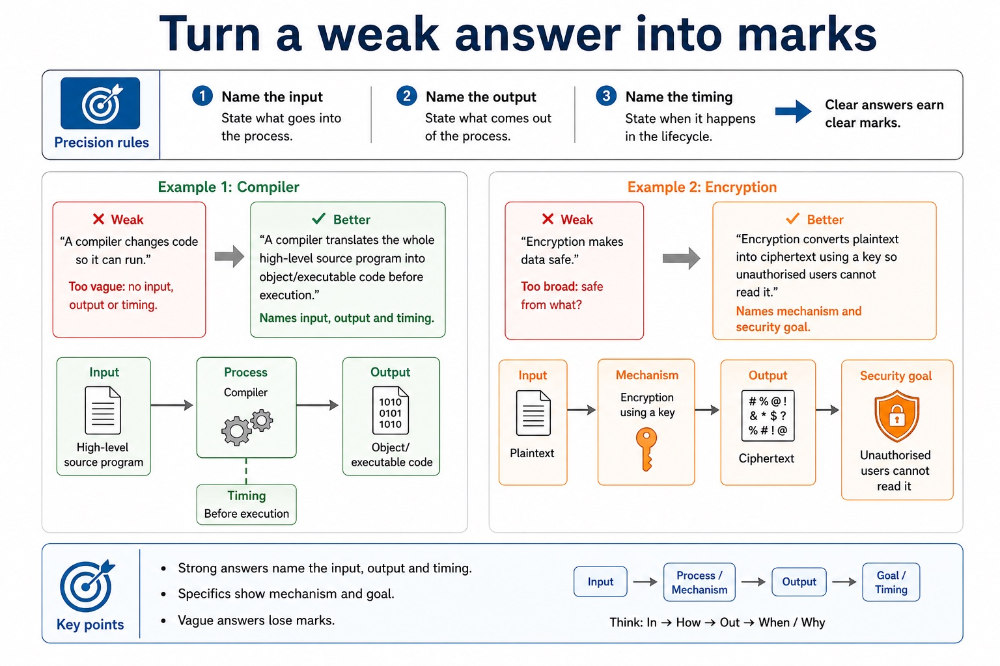

Review is not rereading. It is choosing the right mental toolbox under exam pressure.
This review connects Section 5 ideas: operating systems, utility software, interfaces,
translators, compilation stages, linkers/loaders/libraries and error diagnostics.
The aim is precise comparison: name the correct tool, show the mechanism, and link it to the scenario.
Retrievekey Section 5 definitions without notes
Comparesimilar concepts using mechanism-level differences
Improveweak answers into mark-worthy Cambridge-style responses
OS manages resourcesUtility performs maintenanceTranslator converts codeLinker connects modulesLoader loads into memory
Keyword first. Mechanism next. Scenario consequence last.
Why this matters
Mixed questions often look easy until students explain the wrong tool. Recognition is part of the mark.
Common trap
Do not use "makes it work" for everything. A linker, loader, compiler and OS do different jobs.
Warm-up hook
Three answers say "it helps the computer run". Which one earns marks?
Click the best answer. Vague answers are comfortable until the mark scheme arrives.
Choose one. Full marks need a mechanism, not just a friendly label.
Retrieval grid
Section 5 in one screen
Operating systemManages resources and provides services such as process, memory, file and device management.Utility softwarePerforms a maintenance/protection task such as backup, compression, encryption, defragmentation or antivirus.User interfaceAllows the user to interact with the system: CLI, GUI, menu-driven or natural language.CompilerTranslates a whole high-level program before execution and can produce object/executable code.InterpreterTranslates and executes high-level code statement by statement.AssemblerTranslates assembly language mnemonics into machine code/object code.Compilation stagesLexical analysis, syntax analysis, semantic analysis, code generation and optimisation.Linker / loaderLinker resolves external references; loader places executable code into main memory.
Logic runs but gives wrong output; runtime fails while executing.
"Wrong output means runtime error."
Similar terms that the exam likes to separate
Similar terms that the exam likes to separate: source-grounded visual explanation.
Lesson fact: High-value comparisons
Lesson fact: Difference that earns marks
Lesson fact: Common wrong answer
Lesson fact: OS vs utility
Lesson fact: OS manages resources; a utility performs a specific maintenance/protection task.
Lesson fact: "Both are apps."
Lesson fact: Compiler vs interpreter
Lesson fact: Compiler translates whole program before execution; interpreter translates/executes statement by statement.
Lesson fact: "Interpreter is a bad compiler."
Lesson fact: Syntax vs semantic
Lesson fact: Syntax checks grammar; semantic checks meaning such as type, scope and declarations.
Lesson fact: "Both mean spelling mistakes."
Precision rules
Turn a weak answer into marks
Weak"A compiler changes code so it can run."Too vague: no input, output or timing.Better"A compiler translates the whole high-level source program into object/executable code before execution."Names input, output and timing.Weak"Encryption makes data safe."Too broad: safe from what?Better"Encryption converts plaintext into ciphertext using a key so unauthorised users cannot read it."Names mechanism and security goal.
Turn a weak answer into marks

Turn a weak answer into marks: source-grounded visual explanation.
Lesson fact: Precision rules
Lesson fact: Weak "A compiler changes code so it can run." Too vague: no input, output or timing.
Lesson fact: Better "A compiler translates the whole high-level source program into object/executable code before execution." Names input, output and timing.
Lesson fact: Weak "Encryption makes data safe." Too broad: safe from what?
Lesson fact: Better "Encryption converts plaintext into ciphertext using a key so unauthorised users cannot read it." Names mechanism and security goal.
Interactive tool
Mixed topic classifier
Select a clue and identify the Section 5 topic before answering.
Worked examples
Answer, annotate, improve
Practice
Instant-check mixed retrieval
Type a short answer, then check. Reveal the expected wording only after trying.
Mistake debugging
Repair weak review answers
Exam-style stage review
Answer first, then reveal the CIE-style mark scheme
These are original Cambridge-style mixed Section 5 questions. The MS rewards precision and scenario linkage.
Summary
Section 5 review rule
RecogniseIdentify the topic before writing the answer.
DefineUse precise input, action and output/result.
CompareState the mechanism difference, not only a vague benefit.
ApplyLink the tool to the scenario evidence.
CorrectRewrite weak answers using mark scheme phrases.
BoundarySection 6 security begins next lesson.
Homework
Clear output, not vague revision
Task 1: Ten-card retrieval deckCreate 10 cards from Section 5. Each back must include input/action/output or problem/mechanism/result.Task 2: Two comparison paragraphsWrite one paragraph comparing compiler and interpreter, and one comparing linker and loader.Task 3: Timed answer repairAnswer one 6-mark mixed Section 5 question in 7 minutes, then rewrite it using a different colour to add missing mark points.